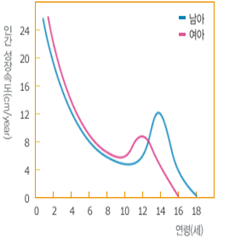
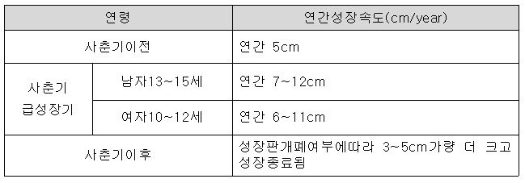
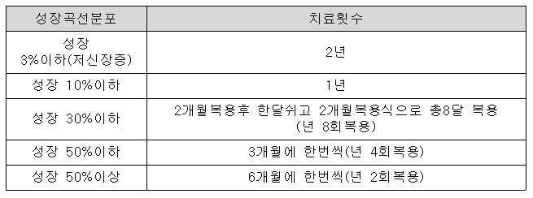

광안동의보감한의원
광안동의보감한의원1. 아이들의 성장이 빨라졌습니다.
예전에 비해 성장의 최고점이 2~3년 빨라졌습니다.
여자아이는 초경후 2년이면 성장이 끝나고(대략 초6~중1). 남자아이는 중3이면 성장이 끝납니다. 또한 여자아이가 35kg이상이면 언제든지 초경할 준비가 된 것이니 비만을 치료해야합니다. 젖멍울이 생긴 후 2년이면 초경을 하고, 그 후 2년이면 성장이 거의 끝나게 되는 겁니다.
2차 성징이 시작되면서 성장이 딱 멈추는 아이들도 있습니다. 키가 잘 커왔기 때문에 부모님들도 신경을 안 쓰는 경향이 있는데, 미리 사춘기전에 베이스를 만들어두는 것이 아주 중요합니다.
따라서 사춘기전부터 성장 급진기(남- 음모나고 3년/ 여- 초경후 2년반)에 집중치료해야 합니다. 성장호르몬이 나올때는 다리가 길어지지만(골반성장), 성호르몬(사춘기이후)은 허리가 길어집니다.(척추성장)
2. 유전적 영향은 25%에 불과하며 운동 영양 환경(수면, 관심, 사랑)이 좋다면 얼마든지 키는 클 수 있으므로 미리 포기하지 말고 꾸준히 치료하는 것이 중요합니다.

나이별 성장속도 그래프표: 성장 단계별 성장속도 변화

여 : 초경직전 약6개월 전부터 2년간 급성장기
아들의 키 = 엄마 키+아빠 키+13/2
딸의 키 = 엄마 키+아빠 키-13/2
성장치료 대상
1) 성장지연: 사춘기까지 연간 4cm이하 성장속도를 보이는 경우
2) 성장곡선 분포상의 치료기준

3) 또래보다 10cm정도 작을 때
광안동의보감한의원 성장치료
1) 성장탕약: 아이들의 건강상태에 따른 맞춤 처방을 합니다. 특히 소화기가 약한 아이, 알레르기성 비염등 만성비염이 있는 아이, 아토피피부염이 있는 아이, 비만인 아이는 기본적인 몸의 베이스를 잘 치료해야 성장이 잘 됩니다.
2) 성장환, 성장고: 성장호르몬을 촉진하고 뼈와 근육이 같이 성장하도록 성장에 포인트를 맞춘 한약입니다. 복용이 간편하고 오래 복용할수 있으며, 성장탕약의 보조약으로도 함께 복용하면 시너지 효과가 뛰어납니니다.
3) 성장침: 한의학의 원리에 따라 근골을 튼튼하게 하며 순환를 촉진하는 침을 시술합니다.
4) 왕뜸: 복부와 경혈에 뜸을 하여 경락순환을 도와서 순환을 좋게합니다.
5) 성장추나: 나무가 바르게 크도록 도우듯이 척추의 정렬을 바로 잡아서 성장이 잘 되도록 도우며, 숨은 키를 찾아줍니다.
6) 성장매선: 척추주변의 근육이 바르게 균형을 잡을 수 있도록 하는 치료입니다.
성장치료에 도움을 주는 요소
영양(29%)
- 균형잡힌 식사를 하라
매끼마다 단백질을 섭취해야한다. (육고기, 해산물, 계란, 두부등) 탄수화물과 단백질 섬유질(야채)의 비율을 비슷하게 섭취하면 영양학적인 문제는 거의 해결이 된다. 단, 닭고기와 연골성분은 성장을 방해한다. 짠음식은 피해야한다. 한의학적으로 짠음식은 뼈를 빨리 굳게 할수 있기 때문이다.
- 비타민D3을 섭취해라
비타민D3을 매일 섭취할 경우 칼슘흡수율을 20%에서 70%까지 끌어 올릴 수가 있다.
등푸른생선, 표고버섯, 계란노른자, 우유, 시금치등에 들어있으며, 강하지 않은 햇빛에 하루 40분~1시간 정도 노출시키는 것이 좋다.
- 탄산음료를 먹지마라
탄산음료를 먹으면 칼슘을 녹여 소변을 통해 배출시키므로 성장을 저해하고 뼈가 약해지고 치아도 쉽게 부식된다. 사이다 콜라 환타 등등
- 설탕을 먹지마라
과도한 설탕은 혈당을 높여서 살이 찌게하고 성장호르몬의 작용을 방해한다. 급격한 혈당의 상승은 인슐린의 작용을 높여서 뇌에 필요한 영양공급을 방해하여 집중력을 떨어뜨린다. 설탕은 살찌고 머리나빠지고 키 안크게하는 안좋은 놈이다. 탄산음료의 12%, 아이스크림의 22%, 케찹의 27%, 빵, 떡, 과자, 주스에 너무 과다하게 들어있다.
- 아침식사를 반드시 해야 한다
보통은 8시전에 하는 식사의 92%가 몸에 영양을 주며 키 크는데 절대적 관계가 있다
밤에 먹는 식사는 대부분 몸에 저장을 하여 독소처럼 처리가 되기 때문에 키 크는 데는 지장을 준다. 자기 전에 음식을 먹으면 혈당이 높아지고, 혈당이 높아지면 성장호르몬 분비가 감소되어서 성장이 원활하게 이루어질 수 없다.
- 물을 잘 마셔야 한다.
식사 때의 물은 소화액을 묽게 만들고 급격하게 혈당을 높이므로 식사 때는 물을 섭취하지 말고, 식후 2시간이상 지나서 마시는 물은 노폐물이 청소되며 혈액순환에 아주 좋아 키 크는데 도움이 된다. 물도 소화 되는데 1시간정도 걸리는 것으로 나타났다. 하루 8잔정도 물을 마셔야 한다. 찬물이나 찬음식은 성장의 따뜻한 기운을 꺾어버리므로 반드시 피해야 한다.
- 인스턴트 음식을 피하라
과자나 라면, 햄버거 같은 음식을 피하고 통밀 빵이나 오곡 현미밥을 먹어 건강하게 성장발육이 잘되게 해야 한다. 특히 단 사탕이나 초콜릿을 먹을 시에는 뼈를 형성하는 칼슘과 인을 소비하므로 절대 섭취하여서는 안 된다.
- 성장에 좋은 식품(腎精을 돋울 수 있는 것)
다시마, 멸치, 검은콩, 요거트(떠먹는 것), 등푸른 생선, 녹황색 채소, 미역, 해조류, 돼지고기, 닭고기(기름기 빼고, 껍질 빼고)/ 다시마, 멸치, 검은콩을 수시로 먹도록 한다.
운동 (20%)
- 매일 운동을 해라
줄넘기, 농구, 철봉 매달리기, 쭉쭉 늘리는 체조는 필수, 배드민턴, 탁구, 조깅과 같은 운동이 성장 촉진에 도움이 된다. 유도, 합기도, 역도, 무게 받는 운동은 나쁘다. 축구도 관절에 무리가 가서 나쁜 편이다.
단, 농구는 슛하는 동작이 효과가 있다. 운동을 하면 성장호르몬이 최고 25배까지 증가하고 세포분열이 더욱 왕성해져서 키 성장에 많은 도움이 된다. 그러나, 과도한 운동은 오히려 방해가 될수 있으니 주의하자.
- 자기전에 스트레칭을 하라
성장판에 자극만 주어놓고 그냥 자는것과 스트레칭을 통해 성장판이 자랄 수 있는 공간을 마련해 주는 것과는 차이가 크다. 전체 관절을 열어줄 수 있는 스트레칭을 5~10분하고 잠자리에 들도록 하자. 초등학교 이전에는 부모가 마사지를 해주는 것이 좋다.
수면 및 환경 (16%)
- 일찍 자고 일찍 일어나라
키는 성장호르몬의 영향을 절대적으로 받는데, 잠잘 때와 운동할 때 많이 분비되고 저녁 10시부터 새벽 2시 사이에 가장 많이 분비되므로 일찍 자는 것이 매우 중요하다.
- 최대한 숙면을 취하라
깊은 숙면을 취할수록 성장호르몬은 더 많이 분비된다. 정서적 감동은 숙면을 취하게 한다.
잠자기 전 감동적인 이야기로 뇌파의 흐름이 좋아지도록 하고 잠자리에 들어야 한다.
클래식음악을 듣거나 좋은 책을 읽어서 깊은 감동을 받으면 호르몬 조절에 효과가 있다고 하는 것은 이미 동물실험과 인체 호르몬 조절에서 증명된바 있다. 그러므로 깊은 사색을 하면 좋다. 재즈 음악이나 컴퓨터게임은 뇌의 호르몬에 문제를 일으킨다.
- 화를 내지마라
화를 내면 몸이 스트레스를 받아 면역을 담당하는 티임파구의 활동이 억제되어 알레르기질환이 심해질 수 있다. 알레르기질환을 앓으면 성장호르몬의 활동을 억제하게 된다.
또한, 근심 걱정도 뼈를 약하게 하기 때문에 성장에 방해가 된다.